Topic 9 Introduction to Ggplot
The data properties are typically numerical or categorical values, while the visual properties include the x and y positions of points, colors of lines, heights of bars, and so on. The process of creating a data visualization is to map the data properties to visual properties.
In R’s base graphics functions, each mapping of data properties to visual properties is its special case. Changing the mappings in the base R graphics may require restructuring the data utilizing completely different plotting commands, or both.
On the other hand, ggplot2 is a system for declaratively creating graphics, based on The Grammar of Graphics. We provide the data, and tell ggplot2 how to map variables to aesthetics and what graphical primitives to use, ggplot() takes care of the details.
The graphic functions in base R are powerful, but in general, it is believed that ggplot() is better.
For those who program in Python, It is good to know that plotnine is an implementation of a grammar of graphics in Python, it is based on ggplot2().
For those who program in SAS, the SAS ODS graphics are roughly analogous to R’s ggplot() although it is not a direct implementation of The Grammar of Graphics.
9.1 Basics of ggplot()
Plotting with ggplot2 is based on “adding” plot layers and design elements on top of one another, with each command added to the previous ones with a plus symbol (+). The result is a multi-layer plot object that can be saved, modified, printed, exported, etc.
ggplot() objects can be highly complex, but the basic order of layers will usually look like this:
Begin with the baseline
ggplot()command - this “opens” the ggplot and allows subsequent functions to be added with+. Typically the data set is also specified in this commandAdd
“geom”layers - these functions visualize the data as geometries (shapes), e.g. as a bar graph, line plot, scatter plot, histogram (or a combination!). These functions all start withgeom_as a prefix.Add design elements to the plot such as axis labels, titles, fonts, sizes, color schemes, legends, or axes rotation
We can check the tidyverse reference site for more details at https://ggplot2.tidyverse.org/reference/index.htm
A simple example of skeleton code is as follows. We will explain each component in the code below.
# plot data from my data columns as red points
ggplot(data = my_data) + # use the dataset "my_data"
geom_point( # add a layer of points (dots)
mapping = aes(x = col1, y = col2), # "map" data column to axes
color = "red") + # other specification for the geom
labs()+ # here you add titles, axes labels, etc.
theme() # here you adjust color, font, size etc # of non-data plot elements (axes,
# title, etc.) In the following sections, we will detail each of the components in the above code.
9.2 Structure of ggplot()
The opening command of any ggplot2 plot is ggplot(). This command simply creates a blank canvas upon which to add layers. It “opens” the way for further layers to be added with a + symbol.
Typically, the command ggplot() includes the data = argument for the plot. This sets the default data set to be used for subsequent layers of the plot.
This command will end with a + after its closing parentheses. This leaves the command “open”. The ggplot will only execute/appear when the full command includes a final layer without a + at the end.
# This will create a plot that is a blank canvas
ggplot(data = linelist)9.3 Geoms
The above code creates a blank canvas. We need to create geometries (shapes) from our data (e.g. bar plots, histograms, scatter plots, box plots).
This is done by adding layers of “geoms” to the initial ggplot() command. Many ggplot2 functions create “geoms”. Each of these functions begins with “geom_”, so we will refer to them generically as geom_XXXX().
There are over 40 geoms in ggplot2 and many others created by fans. View them at the ggplot2 gallery. Some common geoms are listed below:
- Histograms -
geom_histogram() - Bar charts -
geom_bar()orgeom_col() - Box plots -
geom_boxplot() - Points (e.g. scatter plots) -
geom_point() - Line graphs -
geom_line()orgeom_path() - Trend lines -
geom_smooth()
We can display one or multiple geoms in one plot. Each is added to previous ggplot2 commands with a +, and they are plotted sequentially such that later geoms are plotted on top of previous ones.
9.4 Mapping Data to Plot
geom functions require mapping (assigning) columns in the data to components of the plot like the axes, shape colors, shape sizes, etc. The mappings must be wrapped in the aes() function, so we would write something like mapping = aes(x = col1, y = col2).
For example, in the following example using iris data, Sepal Length is mapped to the x-axis, and Sepal Width is mapped to the y-axis. After a +, the plotting commands continue. A shape is created with the “geom” function geom_point().

When creating a histogram, only one variable is used. See the following example.
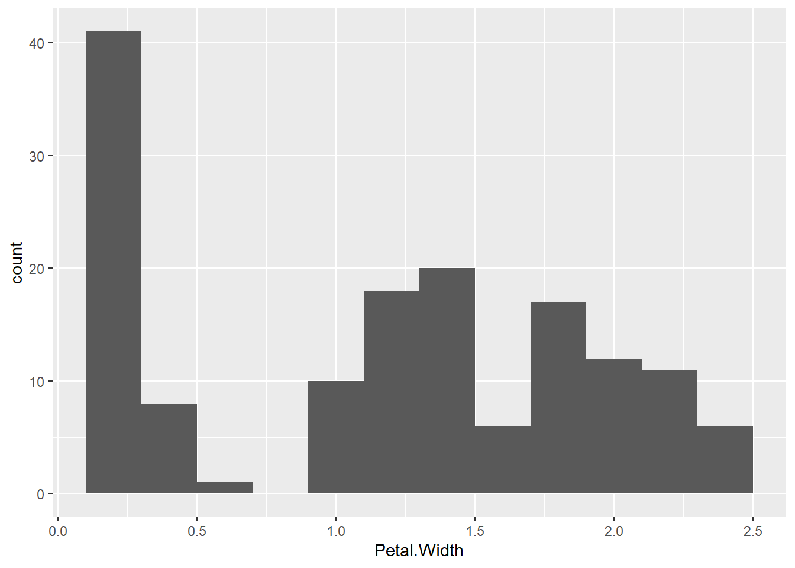
9.4.1 Arranging Multiple Grobs on the Same Page
In the above subsection, we create two graphs on two different pages. Sometimes, we want to place two more graphs on the same page for comparison purposes. In base R, we have graphic functions such as par() and layout() to set up a layout for the graphic page.
In this note, we introduce library cowplot to arrange multiple graphical objects (a.k.a grobs) on a page.
## name the two plots first and then call the two grobs in the layout function
## scatter plot
scatter = ggplot(data = iris, mapping = aes(x = Sepal.Length, y = Sepal.Width)) +
geom_point()
## histogram
hist = ggplot(data = iris, mapping = aes(x = Petal.Width)) +
geom_histogram(binwidth = 0.2)
## use plot_grid() in {cowplot} to layout the two plots
plot_grid(scatter, hist, labels=c("A", "B"), ncol = 2, nrow = 1)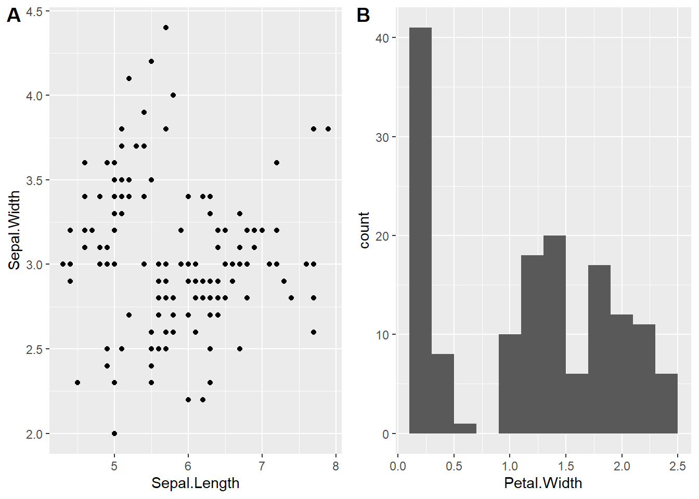
9.4.2 Plot Aesthetics
In ggplot terminology a plot “aesthetic” has a specific meaning. It refers to colors, sizes, transparencies, placement, etc. of the plotted data. Not all geoms will have the same aesthetic options, but many can be used by most geoms.
Here are some examples:
shape= Display a point withgeom_point()as adot,star,triangle, orsquare, etc.fill= The interior color (e.g. of a bar or boxplot)color= The exterior line of a bar, boxplot, etc., or the point color if usinggeom_point()size= Size (e.g. line thickness, point size)alpha= Transparency (1 = opaque, 0 = invisible)binwidth= Width of histogram binswidth= Width of “bar plot” columnslinetype= Line type (e.g.solid,dashed,dotted)
The aesthetics of plot objects can be assigned values in two ways:
Assigned a static value (e.g. color = “blue”) to apply across all plotted observations
Assigned to a column of the data (e.g. color = hospital) such that the display of each observation depends on its value in that column
We have already added binwidth to the above histogram. Next, we add color to the histogram
# Change histogram plot line colors by groups
scatter01 <- ggplot(iris, aes(x = Sepal.Length, y = Sepal.Width,
color = Species,
size = Petal.Width)) +
geom_point(alpha = 0.5)
# Overlaid histograms
hist01 <- ggplot(iris, aes(x = Petal.Width, color=Species)) +
geom_histogram(fill="navy",
alpha = 0.3,
position = "identity",
binwidth = 0.2)
## use plot_grid() in {cowplot} to layout the two plots
plot_grid(scatter01, hist01, labels=c("A", "B"), ncol = 2, nrow = 1)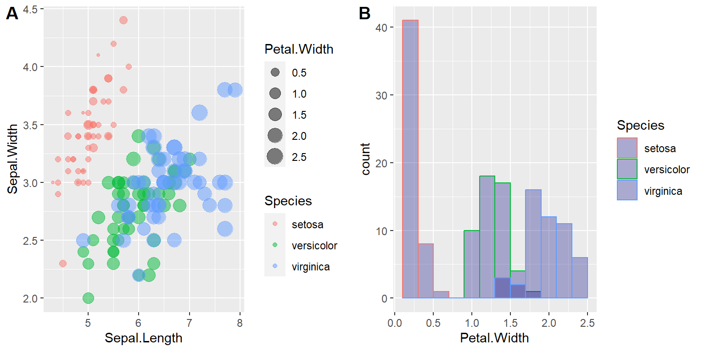
9.4.3 Labels in ggplot()
Surely you will want to add or adjust the plot’s labels. These are most easily done within the labs() function which is added to the plot with + just as the geoms were.
Within labs() you can provide character strings to these arguments:
x =andy =: The x-axis and y-axis title (labels)title =: The main plot titlesubtitle =: The subtitle of the plot, in smaller text below the titlecaption =: The caption of the plot, in bottom-right by default
Here is a plot we made earlier, but with nicer labels:
ggplot(iris, aes(x = Sepal.Length, y = Sepal.Width,
color = Species,
size = Petal.Width)) +
geom_point(alpha = 0.5) +
labs(
x = "Sepal Length",
y = "Sepal Width",
# label for legends
size = "Sepal Length:",
color = "Species:",
title = "Association between Sepal Length and Width",
subtitle = "This is a partial scatter plot",
caption = paste("Created on", Sys.Date())) +
theme_minimal() # minimal theme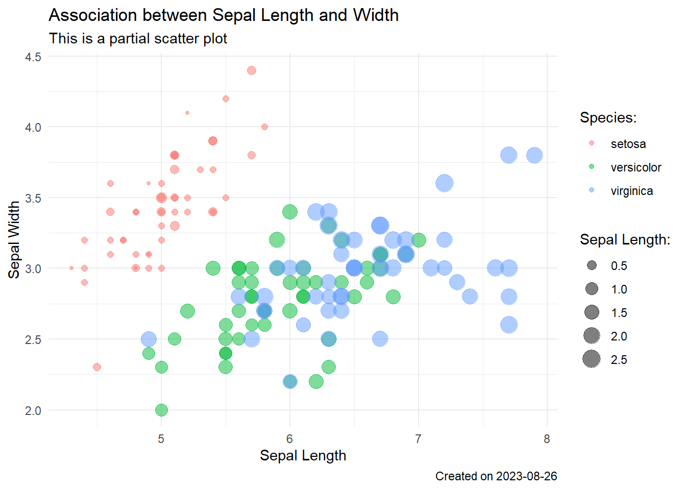
9.4.4 Themes in ggplot()
The theme system in ggplot() does not affect how the data is rendered by geoms, or how it is transformed by scales. Themes don’t change the perceptual properties of the plot, but they do help you make the plot aesthetically pleasing or match an existing style guide. Themes give us control over things like fonts, ticks, panel stripes, and backgrounds.
In other words, when creating the plot we determine how the data is displayed, and then after it has been created we can edit every detail of the rendering, using the theming system.
The theming system is composed of four main components:
Theme elements specify the non-data elements that we can control. For example,
plot.titlecontrols the appearance of the plot title;axis.ticks.xcontrols the ticks on the x-axis;legend.key.heightcontrols the height of the keys in the legend.
Each element is associated with an element function, which describes the visual properties of the element. For example,
element_text()sets the font size, color and face of text elements likeplot.title.The
theme()function which allows you to override the default theme elements by calling element functions, liketheme(plot.title = element_text(colour = "red")).Complete themes, like
theme_grey()set all of the theme elements to values designed to work together harmoniously.
Here are some especially common theme() arguments. You will recognize some patterns, such as appending .x or .y to apply the change only to one axis.
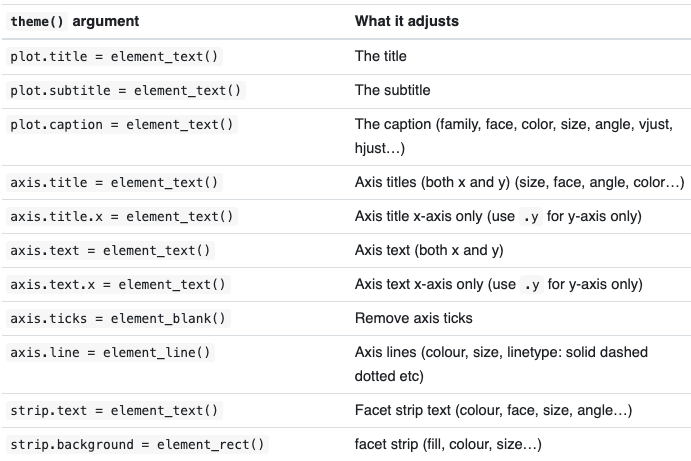
To get the complete list of themes, run the following code
To make sure the plot can stand alone, we need to provide the plot with axes, legend labels, title, and tweaking the color scale for appropriate colors.
# adding themes
ggplot(iris, aes(x = Sepal.Length, y = Sepal.Width,
color = Species,
size = Petal.Width)) +
geom_point(alpha = 0.5) +
labs(
x = "Sepal Length",
y = "Sepal Width",
# label for legends
size = "Sepal Length:",
color = "Species:",
title = "Association between Sepal Length and Width" ) +
theme_minimal() + # minimal theme
theme( # list of themes applied to the plot
# plot title features
# font family: c("sans", "serif", "mono")
# font face: c("plain", "bold", "italic", "bold.italic")
plot.title = element_text(face = "bold",
size = 12,
family = "sans",
color = "darkred",
hjust = 0.5), # left(0),right(1)
# Labels of axes
axis.title.x = element_text(color = "red",
face = "italic",
family = "serif",
hjust = 0.5),
axis.title.y = element_text(color = "blue",
face = "bold",
vjust = 0.5),
axis.ticks = element_line(color = "red",
size = 0.5),
axis.line = element_line(color = "darkblue",
size = 1,
linetype = "solid"),
# Axis tick marks
axis.text.x = element_text(face="plain",
color="purple",
size=11,
angle=45),
axis.text.y = element_text(face="plain",
color="orange",
size=11,
angle=90),
# Features of legend
legend.background = element_rect(fill = "white",
size = 0.1,
color = "darkgreen"),
legend.justification = c(0.9, 0.8),
legend.position = "bottom",
## Panel grid
panel.grid.major = element_line(color = "lightblue",
size = 0.1),
panel.grid.minor = element_blank()
)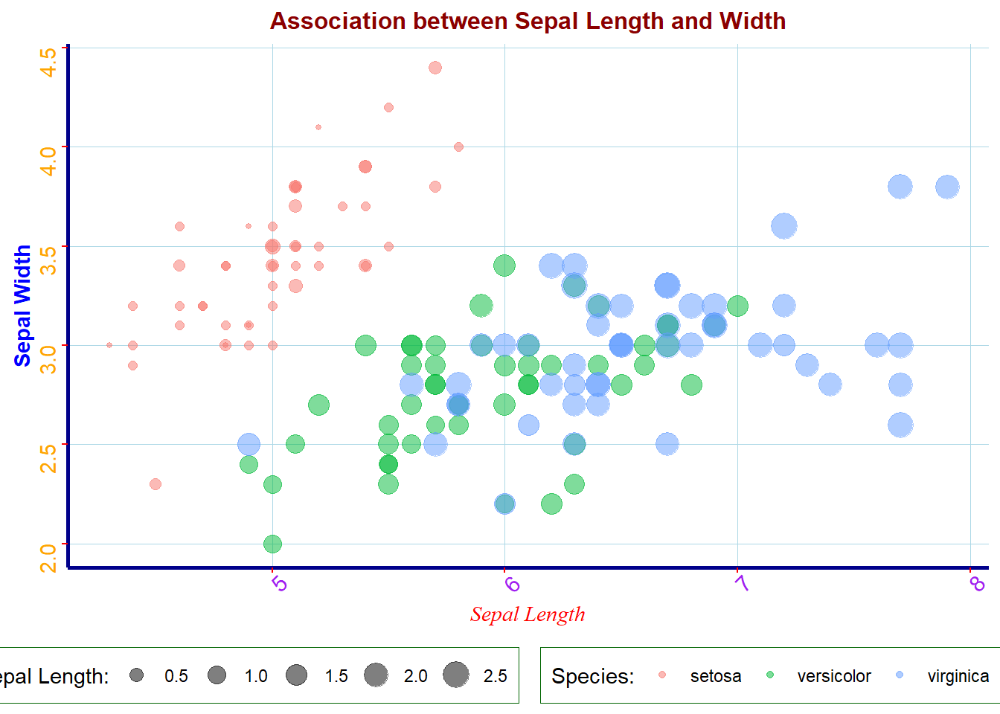
9.4.5 Complete Components of Theme
Themes are a powerful way to customize the non-data components of the plots: i.e. titles, labels, fonts, background, gridlines, and legends. To give our plots a consistent customized look, we can define a theme function and call the theme function in any ggplots.
The tidyverse official website provides a comprehensive document on theme components in `ggplot``. https://ggplot2.tidyverse.org/reference/theme.html. Numerous examples have illustrated how to use various theme components.
We can define a theme function that can be reused to customize the plots. For example, we define the following theme and use it in different plots.
myplot.theme <- function() {
theme(
plot.title = element_text(face = "bold",
size = 12,
family = "sans",
color = "darkred",
hjust = 0.5), # left(0),right(1)
# add border 1)
panel.border = element_rect(colour = "blue",
fill = NA,
linetype = 2),
# color background 2)
panel.background = element_rect(fill = "aliceblue"),
# modify grid 3)
panel.grid.major.x = element_line(colour = "steelblue",
linetype = 3,
size = 0.5),
panel.grid.minor.x = element_blank(),
panel.grid.major.y = element_line(colour = "steelblue",
linetype = 3,
size = 0.5),
panel.grid.minor.y = element_blank(),
# modify text, axis and colour 4) and 5)
axis.text = element_text(colour = "steelblue",
face = "italic",
family = "Times New Roman"),
axis.title = element_text(colour = "steelblue",
family = "Times New Roman"),
axis.ticks = element_line(colour = "steelblue"),
# legend at the bottom 6)
legend.position = "bottom",
legend.key.size = unit(0.6, 'cm'), #change legend key size
legend.key.height = unit(0.6, 'cm'), #change legend key height
legend.key.width = unit(0.6, 'cm'), #change legend key width
legend.title = element_text(size=8), #change legend title font size
legend.text = element_text(size=8)) #change legend text font size
}Now we use the above theme in the following scatter plots. Instead of using the colors based on the value of species, we manually select colors to encode the values of species. The following URL links to a PDF document with colors in R. http://www.stat.columbia.edu/~tzheng/files/Rcolor.pdf
# Change histogram plot line colors by groups
ggplot(iris, aes(x = Sepal.Length, y = Sepal.Width,
color = factor(Species),
size = Petal.Width)) +
geom_point(alpha = 0.5) +
scale_color_manual(values=c("dodgerblue4", "darkolivegreen4","darkorchid3")) +
labs(
x = "Sepal Length",
y = "Sepal Width",
## labels of color and size
size = "Sepal Length:",
color = "Species:",
title = "Association between Sepal Length and Width") +
myplot.theme()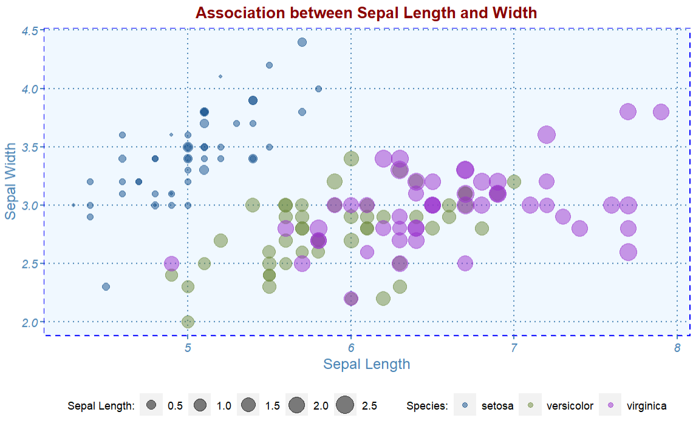
Next, we plot a histogram using the same theme.
ggplot(iris, aes(x = Petal.Width, color=Species)) +
geom_histogram(fill="navy",
alpha = 0.3,
position = "identity",
binwidth = 0.2) +
scale_color_manual(values=c("dodgerblue4", "darkolivegreen4",
"darkorchid3")) +
labs(
x = "Petal Width",
color = "Species:",
title = "Distribution of Petal Width") +
myplot.theme()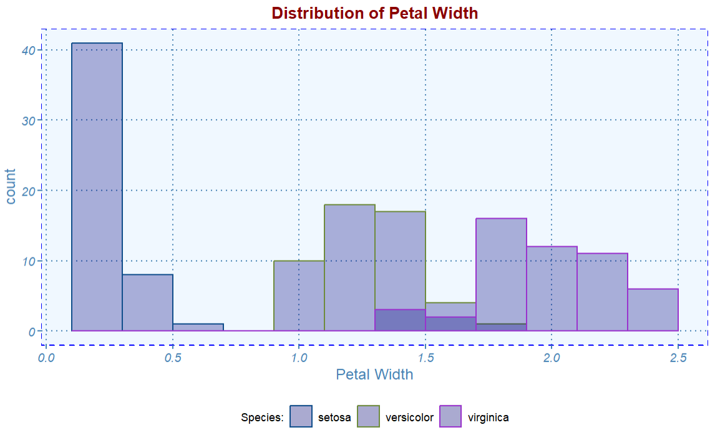
9.5 Adding Annotations to Graphics
To make the graphic more informative, sometimes we may want to add annotations to the graphic. If we create a statistical and probabilistic graphic, occasionally we need to add mathematical equations with Greek letters to the graphics.
9.5.1 Adding Text Annotation to Graphics
9.5.1.1 Adding Plain Text to Graphics
To add plain text to graphics in ggplot, we use the function annotate() with given coordinates. For example, the scatter plot shows two separate groups.
# Change histogram plot line colors by groups
ggplot(iris, aes(x = Sepal.Length, y = Sepal.Width,
color = factor(Species),
size = Petal.Width)) +
geom_point(alpha = 0.5) +
scale_color_manual(values=c("dodgerblue4", "darkolivegreen4", "darkorchid3")) +
labs(
x = "Sepal Length",
y = "Sepal Width",
## labels of color and size
size = "Sepal Length:",
color = "Species:",
title = "Association between Sepal Length and Width") +
myplot.theme() +
annotate(geom="text",
x=7,
y=4.1,
label=paste("The distribution of Setosa is different",
"from that of Versicolor and Viginica", sep = "\n"),
color="red",
hjust = 0.5)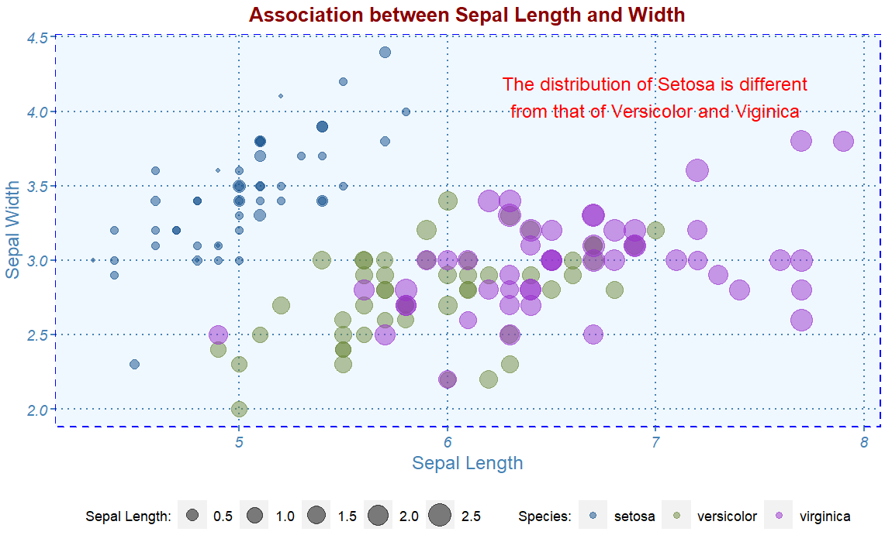
Several other alternatives we can use to add text to graphics created using `ggplot``.
9.5.1.2 Passing Parameters in Annotation
# Change histogram plot line colors by groups
ggplot(iris, aes(x = Sepal.Length, y = Sepal.Width,
color = factor(Species),
size = Petal.Width)) +
geom_point(alpha = 0.5) +
scale_color_manual(values=c("dodgerblue4", "darkolivegreen4", "darkorchid3")) +
labs(
x = "Sepal Length",
y = "Sepal Width",
## labels of color and size
size = "Sepal Length:",
color = "Species:",
title = "Association between Sepal Length and Width") +
myplot.theme() +
annotate(geom="text" ,
x=7,
y=4.4,
label=paste("The Pearson correlation coefficient r = ",
round(cor(iris$Sepal.Length, iris$Sepal.Width),3)),
color = "blue")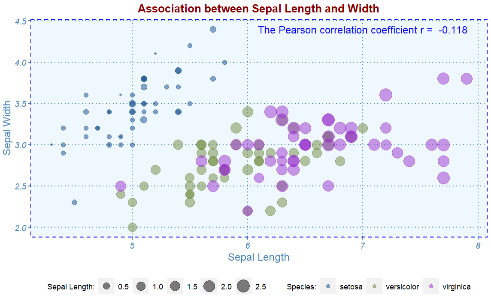
The correlation coefficient between sepal width and sepal length is calculated directly from the data and passed to the annotation in the graphic. Note that we used a very handy and important graphic function paste() when adding the annotation.
9.5.2 Adding Mathematical Equations to Graphics
Mathematical expressions made with the text geoms using parse = TRUE in ggplot2 have a format similar to those made with plotmath() and expression() in base R, except that they are stored as strings, rather than as expression objects.
To mix regular text with expressions, use single quotes within double quotes (or vice versa) to mark the plain-text parts. Each block of text enclosed by the inner quotes is treated as a variable in a mathematical expression.
Bear in mind that, in R’s syntax for mathematical expressions, we can’t simply put a variable right next to another without something else in between. To display two variables next to each other, put a * operator between them. When * is displayed in a graphic, it is treated as an invisible multiplication sign (for a visible multiplication sign, use %*%):
x.axis <- seq(0, 20, length.out = 100)
y.axis <- (1/sqrt(2*pi)*3)*exp(-(x.axis-10)^2/(2*9))
normal.data = data.frame(x=x.axis , y=y.axis)
##
ggplot(normal.data, aes(x = x.axis, y = y.axis)) +
geom_line(color = "blue") +
coord_cartesian(ylim = c(0, 1.25), xlim=c(0,20)) +
labs(
x = "Normal Score",
y = "Normal Density",
title = "Normal Density Curve") +
annotate("text", x = 10, y = 0.2,
parse = TRUE, size = 4,
label = "'Function: ' * y==frac(1, sqrt(2*pi)* sigma) %*% e^{-(x- mu)^2/2}",
color = "red")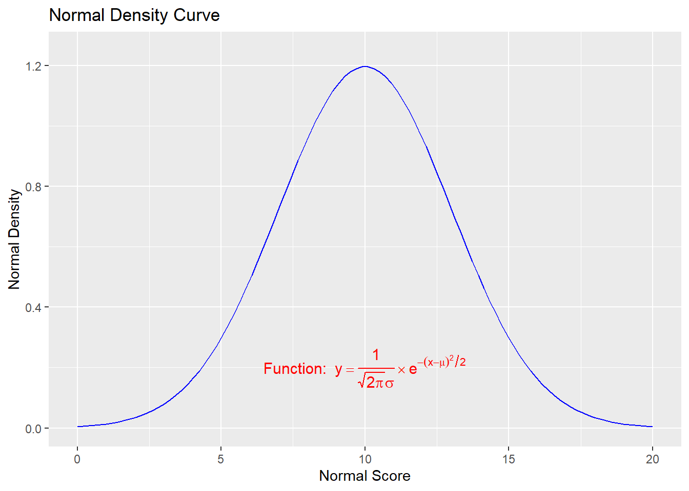
9.5.3 Adding Images to Existing ggPlots
To embed a PNG image to an existing graph created by ggplot, we need to use readPNG() in library png to load the image to R and getURLcontent() in the RCurl to insert the image to the graph.
library("png")
my_cat <- readPNG('img05/cat.png')
raster.cat <- as.raster(my_cat)
# Change histogram plot line colors by groups
ggplot(iris, aes(x = Sepal.Length, y = Sepal.Width,
color = factor(Species),
size = Petal.Width)) +
geom_point(alpha = 0.5) +
labs(
x = "Sepal Length",
y = "Sepal Width",
## labels of color and size
size = "Sepal Length:",
color = "Species:",
title = "Association between Sepal Length and Width") +
myplot.theme() +
annotation_raster(raster.cat, 6, 7, 3.5, 4.5)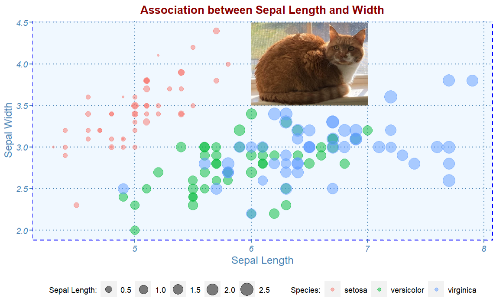
9.5.4 Removing Chart Junks
We remove some unnecessary marks and channels from the chart via theme: change the background color, grid, and plot title.
myplot.theme_new <- function() {
theme(
#ggplot margins
plot.margin = margin(t = 50, # Top margin
r = 30, # Right margin
b = 30, # Bottom margin
l = 30), # Left margin
## ggplot titles
plot.title = element_text(face = "bold",
size = 12,
family = "sans",
color = "navy",
hjust = 0.5,
margin=margin(0,0,30,0)), # left(0),right(1)
# add border 1)
panel.border = element_rect(colour = NA,
fill = NA,
linetype = 2),
# color background 2)
panel.background = element_rect(fill = "#f6f6f6"),
# modify grid 3)
panel.grid.major.x = element_line(colour = 'white',
linetype = 3,
size = 0.5),
panel.grid.minor.x = element_blank(),
panel.grid.major.y = element_line(colour = 'white',
linetype = 3,
size = 0.5),
panel.grid.minor.y = element_blank(),
# modify text, axis, and color 4) and 5)
axis.text = element_text(colour = "navy",
#face = "italic",
size = 7,
#family = "Times New Roman"
),
axis.title = element_text(colour = "navy",
size = 7,
#family = "Times New Roman"
),
axis.ticks = element_line(colour = "navy"),
# legend at the bottom 6)
legend.position = "bottom",
legend.key.size = unit(0.6, 'cm'), #change legend key size
legend.key.height = unit(0.6, 'cm'), #change legend key height
legend.key.width = unit(0.6, 'cm'), #change legend key width
#legend.title = element_text(size=8), #change legend title font size
legend.title=element_blank(), # remove all legend titles
legend.key = element_rect(fill = "white"),
#####
legend.text = element_text(size=8)) #change legend text font size
}# Change histogram plot line colors by groups
ggplot(iris, aes(x = Sepal.Length, y = Sepal.Width,
color = factor(Species)), linetype = Species) +
geom_point(size = 2, alpha = 0.7) +
stat_smooth(method = lm, se=FALSE, size = 0.3) +
scale_color_manual(values=c("dodgerblue4", "darkolivegreen4", "darkorchid3")) +
labs(
x = "Sepal Length",
y = "Sepal Width",
## labels of color and size
#size = "Sepal Length",
#color = NA,
title = "Association between Sepal Length and Width") +
myplot.theme_new() +
annotate(geom="text" ,
x=6.8,
y=2,
label=paste("The Pearson correlation coefficient r = ",
round(cor(iris$Sepal.Length, iris$Sepal.Width),3)),
size = 2,
color = "navy") +
coord_fixed(1) ## This changes the aspect ratio of the graph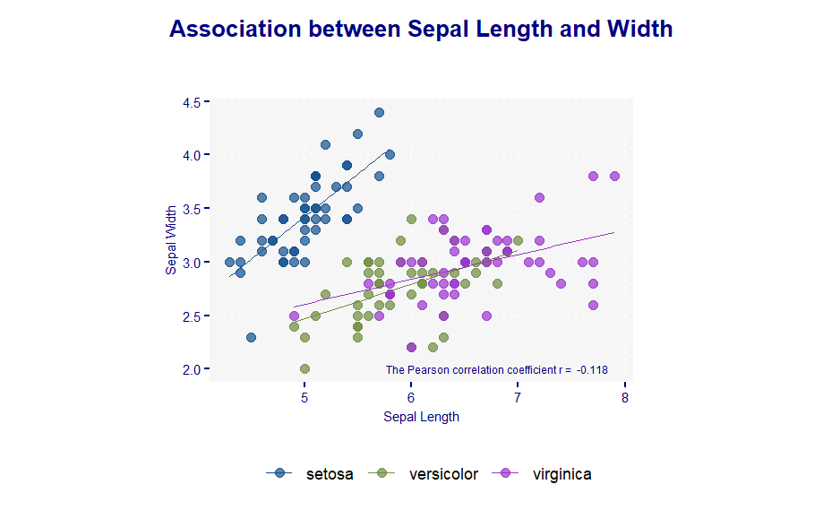
9.6 Aminated Graph with gganimate()
gganimate() extends the grammar of graphics as implemented by ggplot2 to include the description of animation. It does this by providing a range of new grammar classes that can be added to the plot object in order to customize how it should change with time.
transition_*()defines how the data should be spread out and how it relates to itself across time.view_*()defines how the positional scales should change along with the animation.shadow_*()defines how data from other points in time should be presented at the given point in time.enter_*()/exit_*()defines how new data should appear and how old data should disappear during the course of the animation.ease_aes()defines how different aesthetics should be eased during transitions.
The logic behind the gganimate is to create a sequence of images and then make a gif image. We need to write HTML to include this gif in the RMarkdown document.
library(gapminder)
p <- ggplot(gapminder, aes(x = gdpPercap,
y=lifeExp,
size = pop,
colour = country)) +
geom_point(aes(size = pop, ids = country ),
show.legend = FALSE,
alpha = 0.7) +
scale_color_viridis_d() + # color pallets
scale_size(range = c(2, 12)) +
scale_x_log10() +
labs(x = "GDP per capita",
y = "Life expectancy") +
## gganimate command
transition_time(year)
##
anim_save("LifeExp.gif", p)
# animate(p, renderer = gifski_renderer()) # this command will pop-up a new graphic window showing the animation.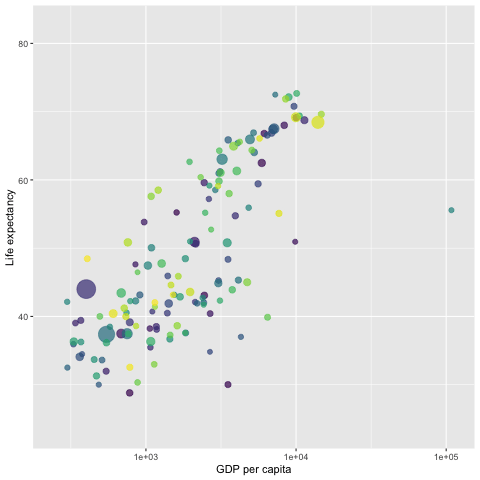
Since the gif image is made of individual static images, it is different from the interactive plot presented in the previous sections that have the capability of showing mode information of the data via hover message.
The next gif graph consists of 5 panels, each representing a continent. They are also fig images. Therefore, no hover message is available for these gif figures.
We use the {gifki} package to render the images in the form of gif and then include the gif image into the RMarkdown document directly.
w <- ggplot(gapminder, aes(gdpPercap, lifeExp,
size = pop, colour = country)) +
geom_point(alpha = 0.7, show.legend = FALSE) +
scale_colour_manual(values = country_colors) +
#scale_color_manual(values=c("dodgerblue4", "darkolivegreen4","darkorchid3")) +
#scale_color_brewer(palette="Set1") +
scale_size(range = c(2, 12)) +
scale_x_log10() +
# break down the previous single plot by continent
# facet_wrap(~continent) + # create multiple panels according to the continents
# Here comes the gganimate specific bits
labs(title = 'Year: {frame_time}',
x = 'GDP per capita',
y = 'life expectancy') +
transition_time(year) +
ease_aes('linear')
###
animate(w, renderer = gifski_renderer(),
rewind = TRUE)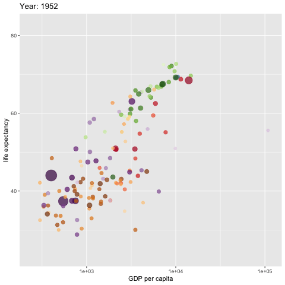
The above code does not save the generated gif image to the document folder (directory). If need to save it from the viewer window to the designated folder and then embed it to a web page create by tools other than the RMarkdown.
Next, we create a group gif using facet_wrap() function. The code is the same as the above example except for one additional function call.
w <- ggplot(gapminder, aes(gdpPercap, lifeExp,
size = pop, colour = country)) +
geom_point(alpha = 0.7, show.legend = FALSE) +
scale_colour_manual(values = country_colors) +
#scale_color_manual(values=c("dodgerblue4", "darkolivegreen4","darkorchid3")) +
#scale_color_brewer(palette="Set1") +
scale_size(range = c(2, 12)) +
scale_x_log10() +
# break down the previous single plot by continent
facet_wrap(~continent) + # create multiple panels according to the continents
# Here comes the gganimate specific bits
labs(title = 'Year: {frame_time}',
x = 'GDP per capita',
y = 'life expectancy') +
transition_time(year) +
ease_aes('linear')
###
animate(w, renderer = gifski_renderer(),
rewind = TRUE)The above code generates the same gif image and sends it to the preview window.
9.7 Ridgetline Plot with ggridges Library
The ridgeline plot is a useful 3D like compare multiple densities. It creates 3D impression and has gained increasing popularity. Here we use the California Housing Data that is available on the Project Data Set https://projectdat.s3.amazonaws.com/datasets.html.
CalHousing = read.csv("https://raw.githubusercontent.com/pengdsci/sta553.html/main/data/ca-housing-price.csv")
ggplot(CalHousing, aes(x = median_house_value, y = ocean_proximity, fill = ocean_proximity)) +
geom_density_ridges()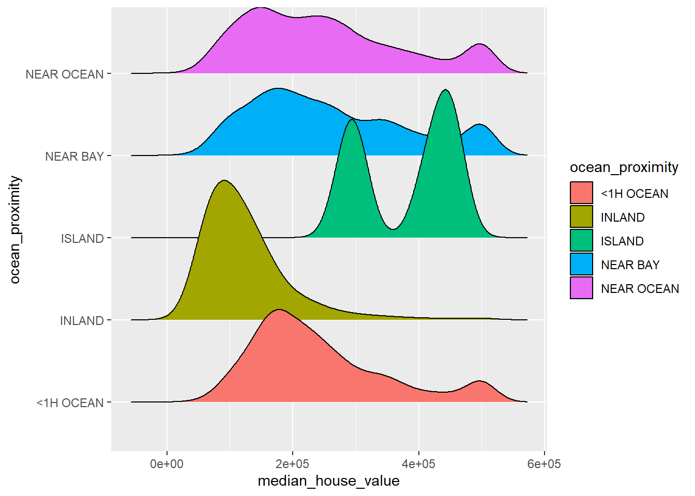
You can pass stat(x) or factor(stat(x)) to the fill argument of aes and use geom_density_ridges_gradient and a continuous fill color scale to fill each ridgeline with a gradient.
ggplot(CalHousing, aes(x = median_house_value, y = ocean_proximity, fill = stat(x))) +
geom_density_ridges_gradient(jittered_points = TRUE,
position = position_points_jitter(width = 0.05, height = 0),
point_shape = '|', point_size = 1, point_alpha = 1, alpha = 0.3,) +
scale_fill_viridis_c(name = "median_house_value", option = "C") 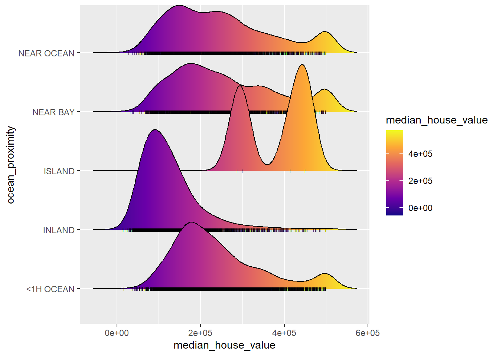
Next we explore the distribution of continuous variable in the iris data set. As an example, we make the following ridgeline plot to see the distribution of sepal widths across the species.
ggplot(iris, aes(x = Sepal.Width, y = Species, fill = stat(x))) +
geom_density_ridges_gradient(jittered_points = TRUE,
position = position_points_jitter(width = 0.05, height = 0),
point_shape = '|', point_size = 1, point_alpha = 1, alpha = 0.3,) +
scale_fill_viridis_c(name = "Sepal Width", option = "C") 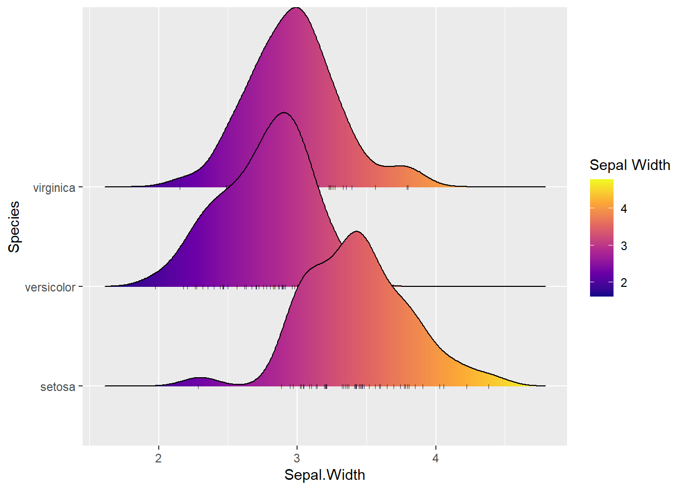
The above distributions have the similar shapes (variations) but with different means. This also indicates the ANOVA model between sepal width and species is appropriate.
9.8 Other Extensions to ggplot
We have used ggplot extensions {gganimate} to create animated graphs and {ggridges} to create ridgeline graphs to compare multiple densities. There are several other important ggplot extensions that enhance the basic ggplots.
ggdendro - controls the appearance and display of your cluster analyses
ggthemes - contains themes and scales that enhance the standard ggplots.
ggpubr - makes it easy to produce publication-ready plots using ggplot.
Plotly - bring interactivity to ggplots. We will spend a week on plotly().
patchwork - arrange multiple R plots on the same graphics page
ggmap - is a powerful package for visualizing spatial data and models. It layers data on top of static maps from popular online sources. We will use these packages to make maps later.
ggrepel - to give ggplot2 users greater control over how text labels appear in their charts.
ggcorrplot - control the appearance of the matrix, from altering the color, shape, or size of the boxes (as in the circle-matrix above), to adding coefficient labels, reordering the matrix according to hierarchical clustering, and so on.
GGally - brings together many useful additional visualization functionality, all in one package.
ggiraph -is htmlwidget that can be extended to an existing ggplot2 bar chart, scatterplot, boxplot, map, etc., and do things like displaying a tooltip of your choice.
9.9 Save ggplot Images
A ggplot can be saved to different file formats, including PDF, SVG vector files, PNG, TIFF, JPEG, etc.
We can either print directly a ggplot into PNG/PDF files or use the convenient function ggsave() for saving a ggplot.
The default of ggsave() is to export the last plot that you displayed, using the size of the current graphics device. It also guesses the type of graphics device from the extension.
9.9.1 General Steps
The standard procedure to save any graphics from R is as follows:
Open a graphic device using one of the following functions:
pdf(“r-graphics.pdf”),svg(“r-graphics.svg”),png(“r-graphics.png”),tiff(“r-graphics.tiff”),jpeg(“r-graphics.jpg”), etc.
Additional arguments indicating the width and the height (in inches) of the graphics region can be also specified in the mentioned function.
Create and print a plot. Close the graphic device using the function
dev.off().
9.9.2 Save ggplot into a PDF File
The following code illustrates how to save a ggplot in a folder in PDF format.
# scatter plots
iris.scatter <- ggplot(iris, aes(Sepal.Length, Sepal.Width)) +
geom_point()
## box-plot
iris.boxplot <- ggplot(iris, aes(Species, Sepal.Length)) +
geom_boxplot()
# Print plots to a pdf file: one page per PDF file
pdf("savePDFggplot.pdf") # save the PDF file in ggplot folder.
print(iris.scatter) # Plot 1 --> in the first page of PDF
print(iris.boxplot) # Plot 2 ---> in the second page of the PDF
dev.off() ## png
## 29.10 Save ggplot with ggsave()
It’s also possible to make a ggplot and save it from the screen using the function ggsave().
# 1. Create a plot: displayed on the screen (by default)
ggplot(mtcars, aes(wt, mpg)) + geom_point()
# 2.1. Save the plot to a pdf
ggsave("mtcarmyplot.pdf")
# 2.2 OR save it to png file
ggsave("mtcarmyplot.png")We can also save multiple plots in the sample format to a single file. We can use plot_grid() in {cowplot} to make two figures on the same graphic page and then use ggsave() to save it to a single file.